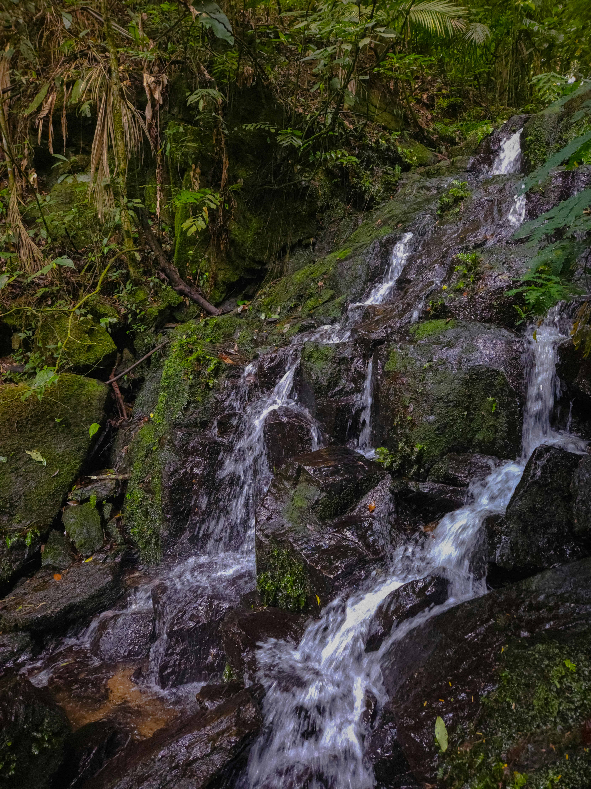
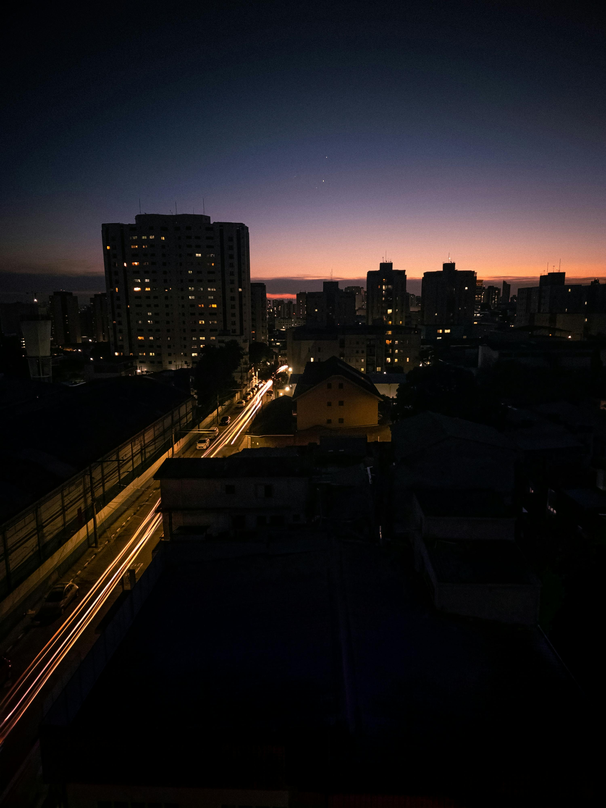
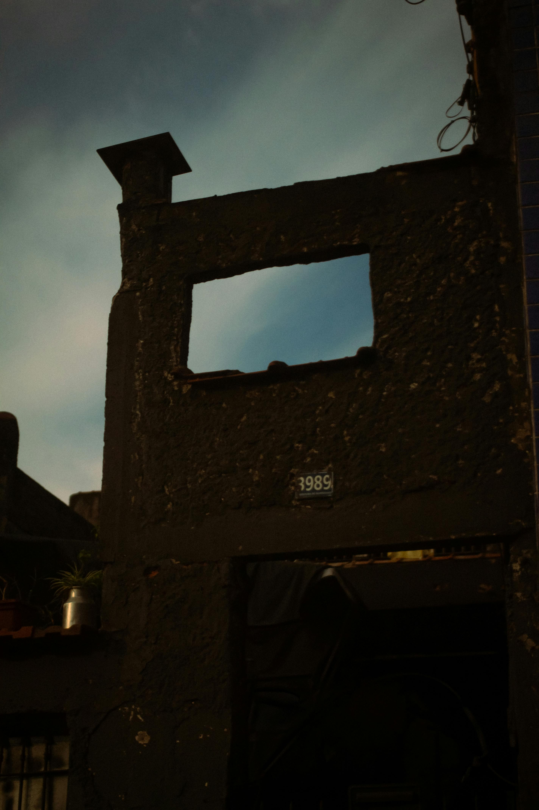
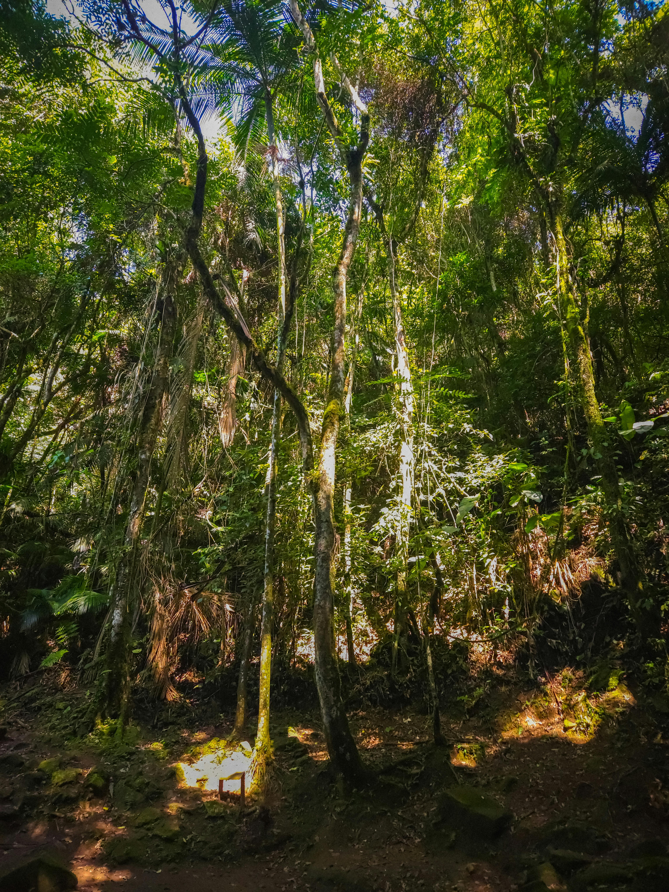
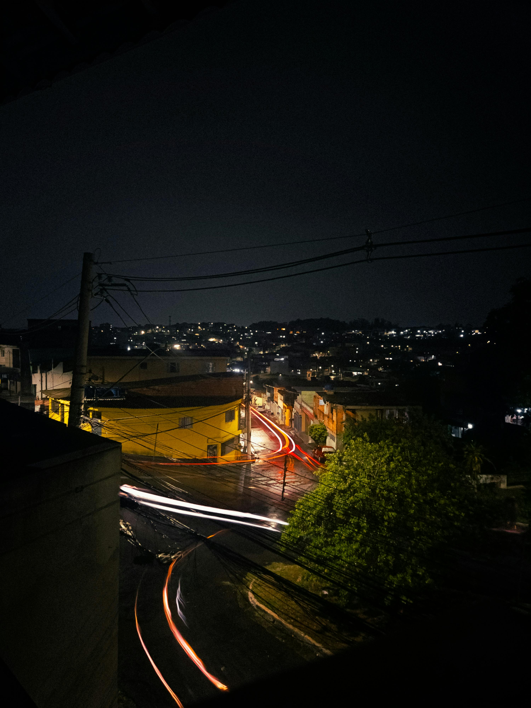
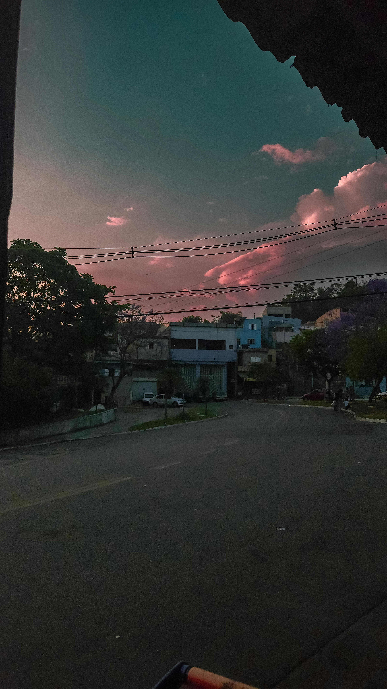

paiva@portfolio:~
VISUAL
FRAMES
PAIVA PHOTOGRAPHY
VISUAL
FRAMESv2.6
−23.5505° S
−46.6333° W
SÃO PAULO · BR
ls ./gallery






cat ./about.md
~$ whoami
Paiva
~$ cat bio.json
{
"role": "fotógrafo + dev",
"location": "Brasil",
"focus": ["street", "natureza"],
"stack": ["Python", "JS", "Rust"],
"camera": "Canon SL3",
"bio": "Programador que encontrou
na fotografia uma forma de
debugar o mundo real."
na fotografia uma forma de
debugar o mundo real."
}
// 2 séries ativas · 500+ frames arquivados
~$
SOBRE_MIM.md
Programador
que fotografa
o mundo real.
Código e câmera são ferramentas do mesmo impulso:
encontrar padrões onde outros vêem caos.
Street, natureza, arquitetura — capturo o Brasil
com olho técnico e coração analógico.
500+
Frames arquivados
2
Séries ativas
BR
Localização
SL3
Câmera principal
paiva.jpg · 4:3